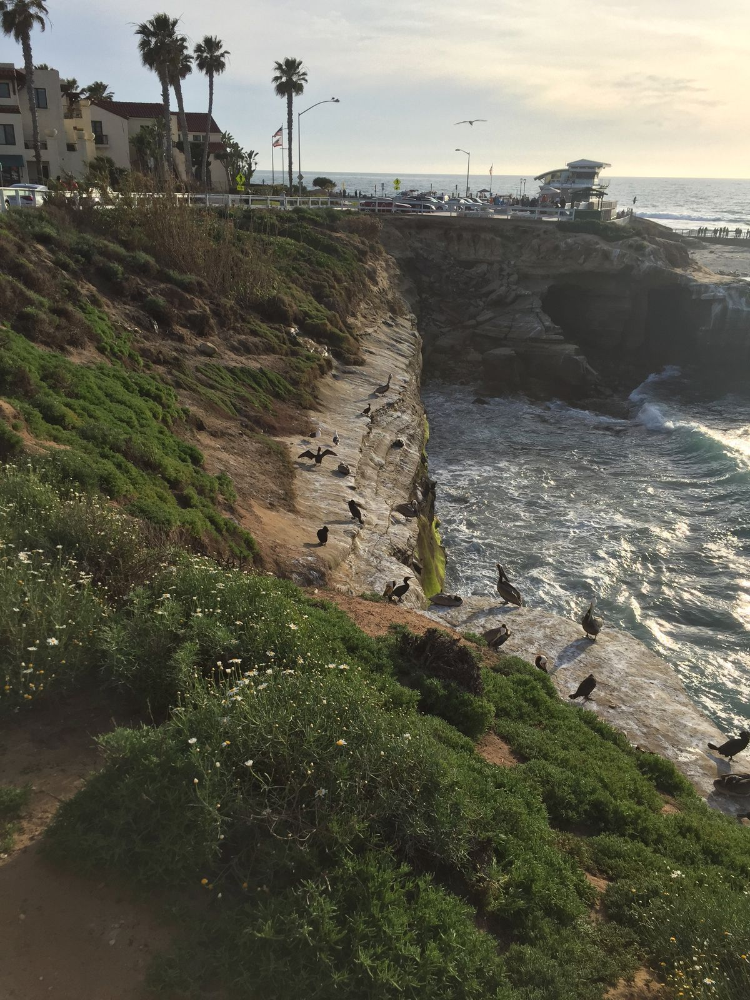

They Never Forget and They Never Forgive
The last time I was in San Diego I got seagulled in the forehead while walking along the beach. An unexpected aerial attack, at first I didn't realize what had happened as white ooze slowly covered my sunglasses lenses. A group sitting on the patio of a restaurant immediately realized what happened and offered me their cloth napkins. I was too stunned to know what was going on, but I expect everyone was laughing because it was hilarious.
Fast forward more than six years and I am back on the beach in San Diego at La Jolla Cove. The seaguls are swooping low and fast, some just a yard above my head. Ever caution I keep my eyes up so that I can better evade bombardment.
However this time it was a pelican that had its sights on me. Swooping from my six, when the bird was about three yards in front of me and two yards above me when it dropped its cargo. My vision locked on target, I saw what was happening and quickly jumped to my right, narrowly avoiding splatter by about a yard.
Birds aren't real and they know I'm onto them.
